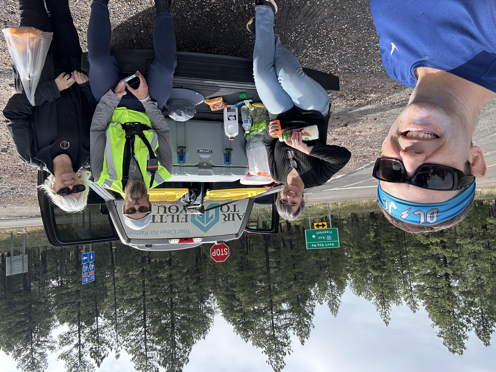
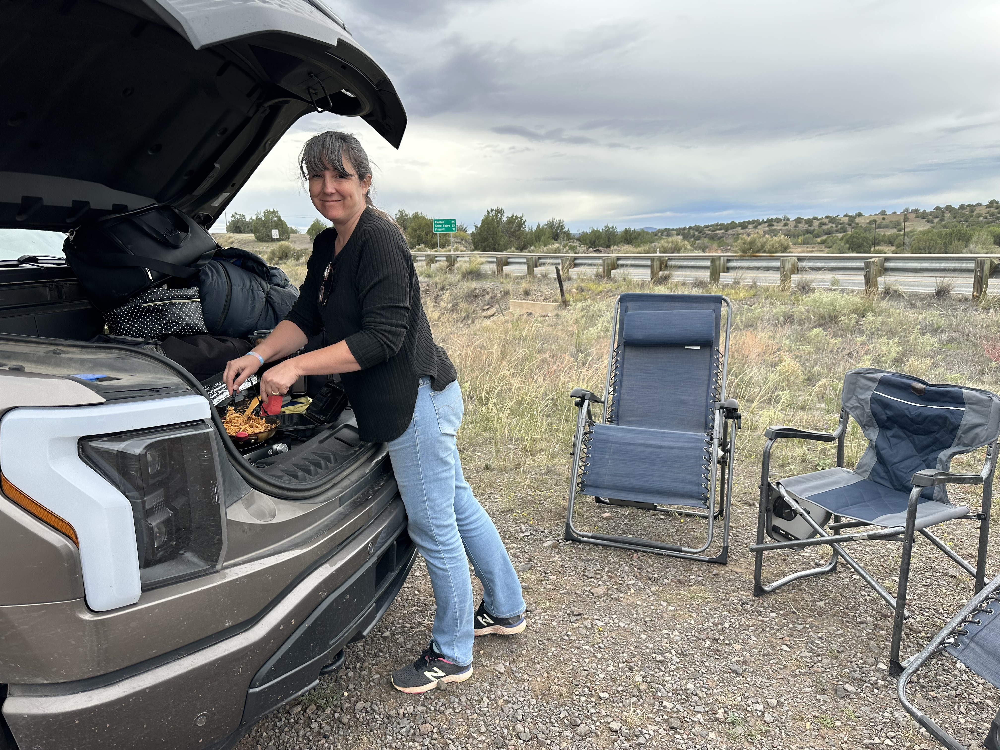
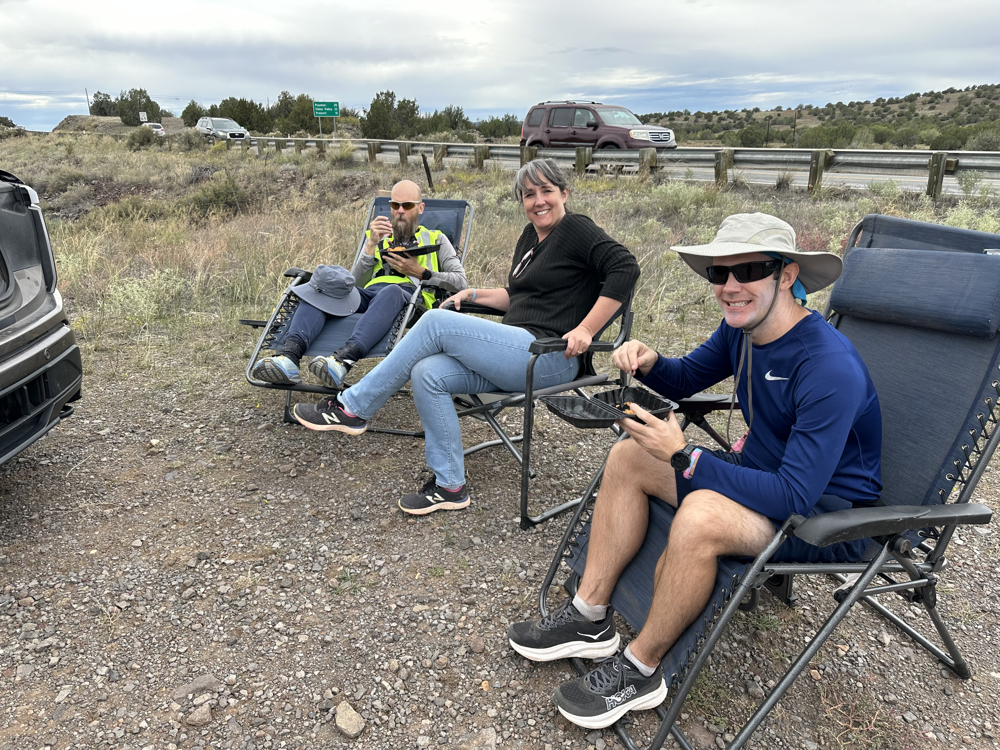
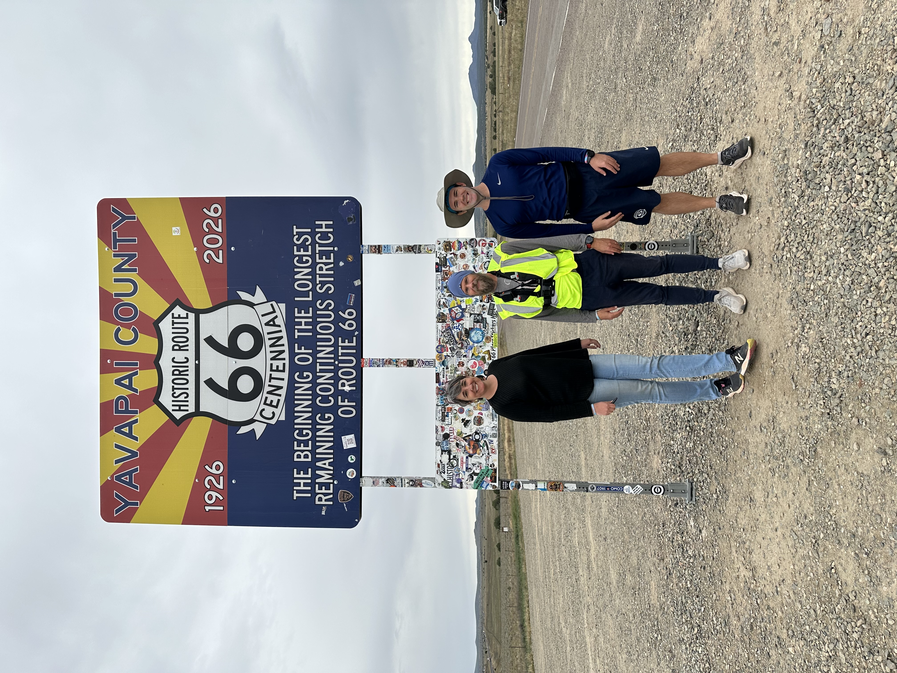
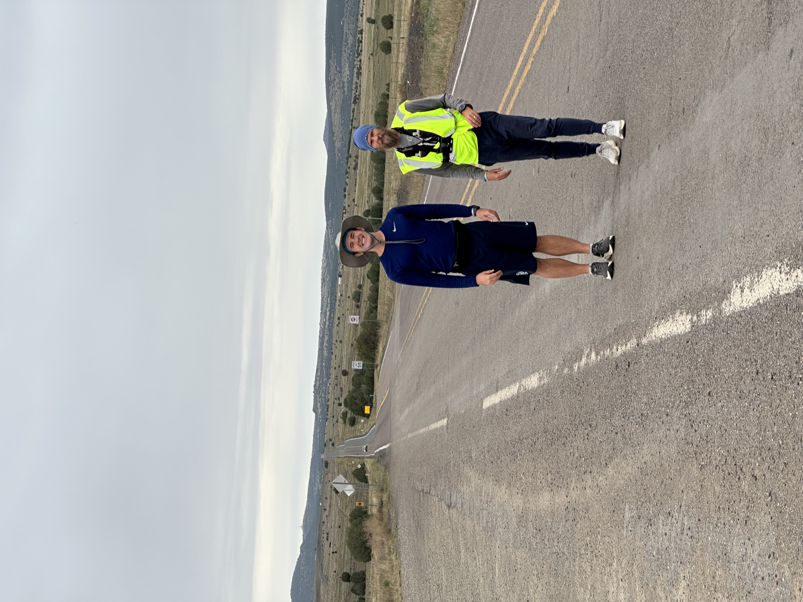

We had some special visitors arrive today! Ryan’s mom and brother came to support and lift us up and it was the perfect moment for them to appear. Justin ran with Ryan last Saturday as well, the first day of the adventure way over in Lupton. It was nice to have him back. They laughed and talked and listened to the BYU game with breathless (literally on that big hill in the rain) attention.
Ryan started out on the west side of beautiful Williams and jogged along Route 66, our old buddy. He quickly had to switch to the side of the highway, as is our old buddy 66’s way of disappearing on us. But he found the three of us waiting at a highway exit and we sent the boys off on an adventure and Arnon and I watched and waited.
Eventually they came upon actual real life paved Route 66, the longest stretch left, and they were cooking with gas. They made it almost to Seligman before the nighttime and a small rainstorm called it a day.





Comments for This Day